Examples for Attractors.jl
Note that the examples utilize some convenience plotting functions offered by Attractors.jl which come into scope when using Makie (or any of its backends such as CairoMakie), see the visualization utilities for more.
Newton's fractal (basins of a 2D map)
using Attractors
function newton_map(z, p, n)
z1 = z[1] + im*z[2]
dz1 = newton_f(z1, p[1])/newton_df(z1, p[1])
z1 = z1 - dz1
return SVector(real(z1), imag(z1))
end
newton_f(x, p) = x^p - 1
newton_df(x, p)= p*x^(p-1)
ds = DiscreteDynamicalSystem(newton_map, [0.1, 0.2], [3.0])
xg = yg = range(-1.5, 1.5; length = 400)
grid = (xg, yg)
# Use non-sparse for using `basins_of_attraction`
mapper_newton = BasinMapRecurrences(ds, grid;
sparse = false, consecutive_lost_steps = 1000
)
basins, attractors = basins_of_attraction(mapper_newton; show_progress = false)
basins400×400 Matrix{Int64}:
1 1 1 1 1 1 1 1 1 1 1 1 1 … 2 2 2 2 2 2 2 2 2 2 2 2
1 1 1 1 1 1 1 1 1 1 1 1 1 2 2 2 2 2 2 2 2 2 2 2 2
1 1 1 1 1 1 1 1 1 1 1 1 1 2 2 2 2 2 2 2 2 2 2 2 2
1 1 1 1 1 1 1 1 1 1 1 1 1 2 2 2 2 2 2 2 2 2 2 2 2
1 1 1 1 1 1 1 1 1 1 1 1 1 2 2 2 2 2 2 2 2 2 2 2 2
1 1 1 1 1 1 1 1 1 1 1 1 1 … 2 2 2 2 2 2 2 2 2 2 2 2
1 1 1 1 1 1 1 1 1 1 1 1 1 2 2 2 2 2 2 2 2 2 2 2 2
1 1 1 1 1 1 1 1 1 1 1 1 1 2 2 2 2 2 2 2 2 2 2 2 2
1 1 1 1 1 1 1 1 1 1 1 1 1 2 2 2 2 2 2 2 2 2 2 2 2
1 1 1 1 1 1 1 1 1 1 1 1 1 2 2 2 2 2 2 2 2 2 2 2 2
⋮ ⋮ ⋮ ⋱ ⋮ ⋮
3 3 3 3 3 3 3 3 3 3 3 3 3 3 3 3 3 3 3 3 3 3 3 3 3
3 3 3 3 3 3 3 3 3 3 3 3 3 3 3 3 3 3 3 3 3 3 3 3 3
3 3 3 3 3 3 3 3 3 3 3 3 3 3 3 3 3 3 3 3 3 3 3 3 3
3 3 3 3 3 3 3 3 3 3 3 3 3 3 3 3 3 3 3 3 3 3 3 3 3
3 3 3 3 3 3 3 3 3 3 3 3 3 … 3 3 3 3 3 3 3 3 3 3 3 3
3 3 3 3 3 3 3 3 3 3 3 3 3 3 3 3 3 3 3 3 3 3 3 3 3
3 3 3 3 3 3 3 3 3 3 3 3 3 3 3 3 3 3 3 3 3 3 3 3 3
3 3 3 3 3 3 3 3 3 3 3 3 3 3 3 3 3 3 3 3 3 3 3 3 3
3 3 3 3 3 3 3 3 3 3 3 3 3 3 3 3 3 3 3 3 3 3 3 3 3attractorsDict{Int64, StateSpaceSet{2, Float64, SVector{2, Float64}}} with 3 entries:
2 => 2-dimensional StateSpaceSet{Float64} with 1 points
3 => 2-dimensional StateSpaceSet{Float64} with 1 points
1 => 2-dimensional StateSpaceSet{Float64} with 1 pointsNow let's plot this as a heatmap, and on top of the heatmap, let's scatter plot the attractors. We do this in one step by utilizing one of the pre-defined plotting functions offered by Attractors.jl
using CairoMakie
fig = heatmap_basins_attractors(grid, basins, attractors)Instead of computing the full basins, we could get only the fractions of the basins of attractions using basins_fractions, which is typically the more useful thing to do in a high dimensional system. In such cases it is also typically more useful to define a sampler that generates initial conditions on the fly instead of pre-defining some initial conditions (as is done in basins_of_attraction. This is simple to do:
sampler, = statespace_sampler(grid)
basins = basins_fractions(mapper_newton, sampler)Dict{Int64, Float64} with 3 entries:
2 => 0.31
3 => 0.358
1 => 0.332in this case, to also get the attractors we simply extract them from the underlying storage of the bmap:
attractors = extract_attractors(mapper_newton)Dict{Int64, StateSpaceSet{2, Float64, SVector{2, Float64}}} with 3 entries:
2 => 2-dimensional StateSpaceSet{Float64} with 1 points
3 => 2-dimensional StateSpaceSet{Float64} with 1 points
1 => 2-dimensional StateSpaceSet{Float64} with 1 pointsShading basins according to convergence time
Continuing from above, we can utilize the convergence_and_basins_of_attraction function, and the shaded_basins_heatmap plotting utility function, to shade the basins of attraction based on the convergence time, with lighter colors indicating faster convergence to the attractor.
mapper_newton = BasinMapRecurrences(ds, grid;
sparse = false, consecutive_lost_steps = 1000
)
basins, attractors, iterations = convergence_and_basins_of_attraction(
mapper_newton, grid; show_progress = false
)
shaded_basins_heatmap(grid, basins, attractors, iterations)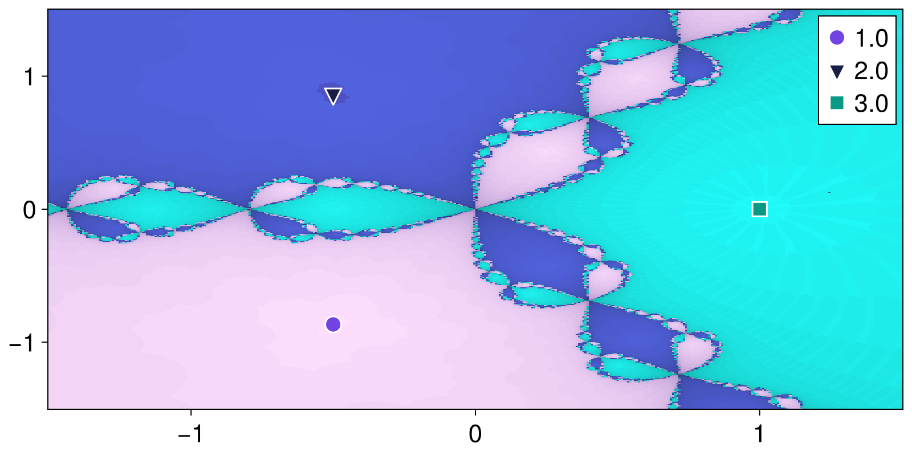
Minimal Critical Shock
Here we find the Minimal Critical Shock (MFS, see minimal_critical_shock) for the attractors (i.e., fixed points) of Newton's fractal
shocks = Dict()
algo_bb = Attractors.MCSBlackBoxOptim()
for atr in values(attractors)
u0 = atr[1]
shocks[u0] = minimal_critical_shock(mapper_newton, u0, (-1.5,1.5), algo_bb)
end
shocksDict{Any, Any} with 3 entries:
[-0.5, -0.866025] => [-0.101303, 0.614684]
[1.0, 0.0] => [-0.461408, 0.417188]
[-0.5, 0.866025] => [0.582984, -0.21961]To visualize results we can make use of previously defined heatmap
ax = content(fig[1,1])
for (atr, shock) in shocks
lines!(ax, [atr, atr + shock]; color = :orange, linewidth = 3)
end
fig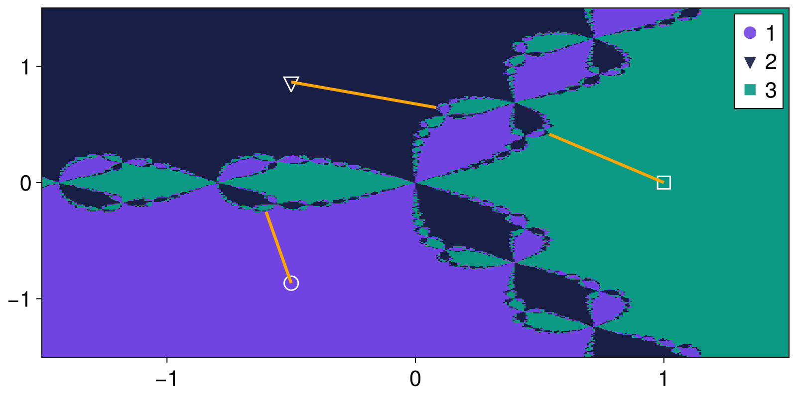
Fractality of 2D basins of the (4D) magnetic pendulum
In this section we will calculate the basins of attraction of the four-dimensional magnetic pendulum. We know that the attractors of this system are all individual fixed points on the (x, y) plane so we will only compute the basins there. We can also use this opportunity to highlight a different method, the BasinMapProximity which works when we already know where the attractors are. Furthermore we will also use a ProjectedDynamicalSystem to project the 4D system onto a 2D plane, saving a lot of computational time!
Computing the basins
First we need to load in the magnetic pendulum from the predefined dynamical systems library
using Attractors, CairoMakie
using PredefinedDynamicalSystems
ds = PredefinedDynamicalSystems.magnetic_pendulum(d=0.2, α=0.2, ω=0.8, N=3)4-dimensional CoupledODEs
deterministic: true
discrete time: false
in-place: false
dynamic rule: MagneticPendulum
ODE solver: Tsit5
ODE kwargs: (abstol = 1.0e-6, reltol = 1.0e-6)
parameters: PredefinedDynamicalSystems.MagneticPendulumParams([1.0, 1.0, 1.0], 0.2, 0.2, 0.8)
time: 0.0
state: [0.7094575840693688, 0.704748136859158, 0.0, 0.0]
Then, we create a projected system on the x-y plane
psys = ProjectedDynamicalSystem(ds, [1, 2], [0.0, 0.0])2-dimensional ProjectedDynamicalSystem
deterministic: true
discrete time: false
in-place: false
dynamic rule: MagneticPendulum
projection: [1, 2]
complete state: [0.0, 0.0]
parameters: PredefinedDynamicalSystems.MagneticPendulumParams([1.0, 1.0, 1.0], 0.2, 0.2, 0.8)
time: 0.0
state: [0.7094575840693688, 0.704748136859158]
and create an attractor bmap that will map initial conditions to attractors like before
xg = yg = range(-4, 4; length = 200)
grid = (xg, yg)
bmap = BasinMapRecurrences(psys, grid; Δt = 1.0)BasinMapRecurrences
system: ProjectedDynamicalSystem
grid: (-4.0:0.04020100502512563:4.0, -4.0:0.04020100502512563:4.0)
attractors: Dict{Int64, StateSpaceSet{2, Float64, SVector{2, Float64}}}()
and as before, get the basins of attraction
basins, attractors = basins_of_attraction(bmap, grid; show_progress = false)
heatmap_basins_attractors(grid, basins, attractors)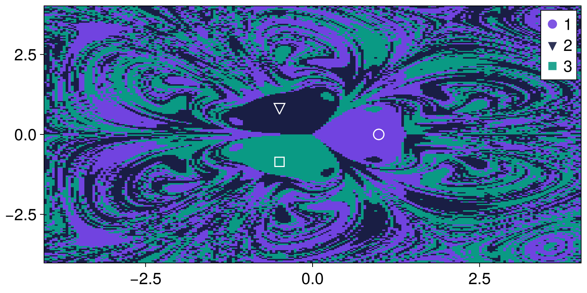
Computing the uncertainty exponent
Let's now calculate the uncertainty_exponent for this system as well. The calculation is straightforward:
using CairoMakie
ε, f_ε, α = uncertainty_exponent(basins)
fig, ax = lines(log.(ε), log.(f_ε))
ax.title = "α = $(round(α; digits=3))"
fig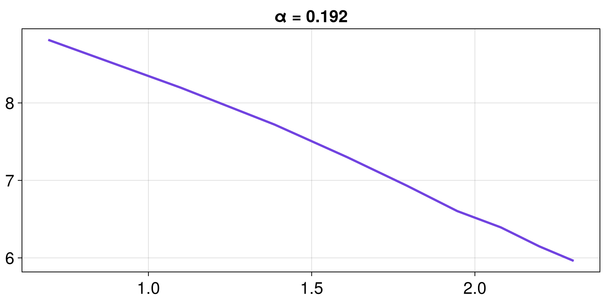
The actual uncertainty exponent is the slope of the curve (α) and indeed we get an exponent near 0 as we know a-priory the basins have fractal boundaries for the magnetic pendulum.
Computing the tipping probabilities
We will compute the tipping probabilities using the magnetic pendulum's example as the "before" state. For the "after" state we will change the γ parameter of the third magnet to be so small, its basin of attraction will virtually disappear. As we don't know when the basin of the third magnet will disappear, we switch the attractor finding algorithm back to BasinMapRecurrences.
set_parameter!(psys, :γs, [1.0, 1.0, 0.1])
bmap = BasinMapRecurrences(psys, (xg, yg); Δt = 1)
basins_after, attractors_after = basins_of_attraction(
bmap, (xg, yg); show_progress = false
)
# matching attractors is important!
rmap = matching_map!(attractors_after, attractors, MatchBySSSetDistance())
# Don't forget to update the labels of the basins as well!
replace!(basins_after, rmap...)
# now plot
heatmap_basins_attractors(grid, basins_after, attractors_after)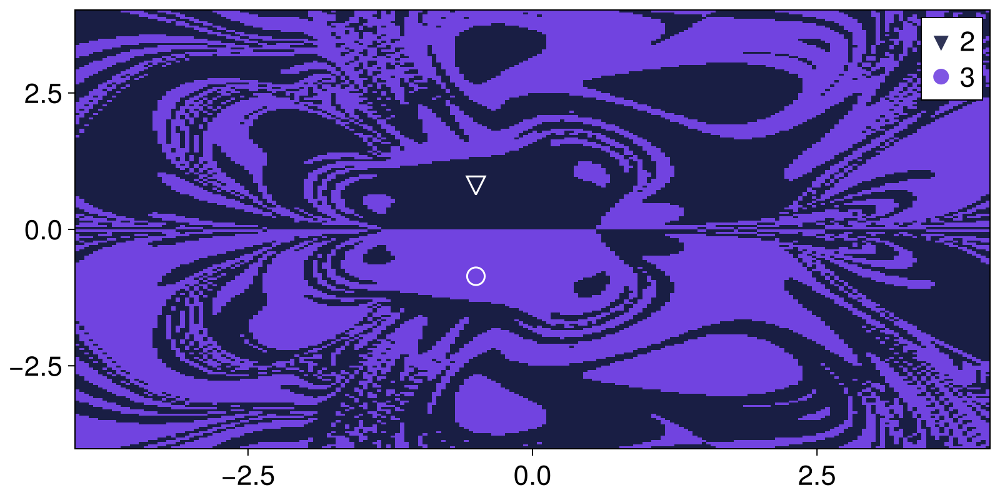
And let's compute the tipping "probabilities":
P = tipping_probabilities(basins, basins_after)3×2 Matrix{Float64}:
0.5 0.5
0.451908 0.548092
0.548092 0.451908As you can see P has size 3×2, as after the change only 2 attractors have been identified in the system (3 still exist but our state space discretization isn't fine enough to find the 3rd because it has such a small basin). Also, the first row of P is 50% probability to each other magnet, as it should be due to the system's symmetry.
Intermingledness and basin entropy
Continuing from the above example of the magnetic pendulum, we can use it as a demonstration of the concept of intermingledness that was recently introduced in (Datseris et al., 2026) and compare it with the established notion of basin_entropy.
To do this well, we will generate two more basins of attraction for the magnetic pendulum at different parameters:
set_parameter!(psys, :γs, [1.0, 1.0, 1.0])
set_parameter!(psys, :α, 1.0)
bmap = BasinMapRecurrences(psys, (xg, yg); Δt = 1)
basins2, attractors2 = basins_of_attraction(bmap, grid; show_progress = false)
set_parameter!(psys, :α, 2.0)
set_parameter!(psys, :d, 0.45)
bmap = BasinMapRecurrences(psys, (xg, yg); Δt = 1)
basins3, attractors3 = basins_of_attraction(bmap, grid; show_progress = false)ArrayBasinsOfAttraction
ID type: Int32
basin size: (200, 200)
grid: (-4.0:0.04020100502512563:4.0, -4.0:0.04020100502512563:4.0)
attractors: Dict{Int64, StateSpaceSet{2, Float64, SVector{2, Float64}}} with 6 entries:
5 => 2-dimensional StateSpaceSet{Float64} with 1 points
4 => 2-dimensional StateSpaceSet{Float64} with 1 points
6 => 2-dimensional StateSpaceSet{Float64} with 2 points
2 => 2-dimensional StateSpaceSet{Float64} with 1 points
3 => 2-dimensional StateSpaceSet{Float64} with 2 points
1 => 2-dimensional StateSpaceSet{Float64} with 1 points
then calculate intermingledness and basin entropy
# we need points of the grid as a vector
points = ics_from_grid(grid)
fig = Figure()
using Statistics: mean
for (i, b) in enumerate((basins, basins2, basins3))
ax = Axis(fig[1,i])
heatmap!(ax, xg, yg, b)
i = intermingledness(points, vec(b)) # points and labels must have same layout
v = mean(values(i))
be = basin_entropy(b, 5)[1]
ax.title = "intermingl. = $(round(v; digits = 2))\nbasin ent. = $(round(be; digits = 2))"
end
resize!(fig, 800, 300)
fig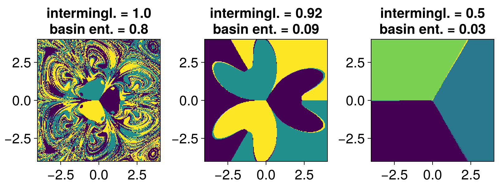
As you can see, intermingledness is not a measure of fractality. Even perfectly smooth basins can have very high intermingledness close to 1. It really is about how close points from one basin are to another, on average. Furthermore, it is really difficult for intermingledness to be 0 for well covered basins, unlike basin entropy that covers the range of 0-1 more easily. In (Datseris et al., 2026) intermingledness is introduced primarily for sparse data, and for focusing on specific dimensions. Moreover, intermingledness is defined per basin, while basin entropy is a quantity characterizing the whole basin structure.
Trivial featurizing and grouping for basins fractions
This is a rather trivial example showcasing the usage of BasinMapFeaturizeGroup. Let us use once again the magnetic pendulum example. For it, we have a really good idea of what features will uniquely describe each attractor: the last points of a trajectory (which should be very close to the magnetic the trajectory converged to). To provide this information to the BasinMapFeaturizeGroup we just create a julia function that returns this last point
using Attractors
using PredefinedDynamicalSystems
ds = Systems.magnetic_pendulum(d=0.2, α=0.2, ω=0.8, N=3)
psys = ProjectedDynamicalSystem(ds, [1, 2], [0.0, 0.0])
function featurizer(X, t)
return X[end]
end
bmap = BasinMapFeaturizeGroup(psys, featurizer; Ttr = 200, T = 1)
xg = yg = range(-4, 4; length = 101)
region = HRectangle([-4, 4], [4, 4])
sampler, = statespace_sampler(region)
fs = basins_fractions(bmap, sampler; show_progress = false)Dict{Int64, Float64} with 3 entries:
2 => 0.383
3 => 0.391
1 => 0.226As expected, the fractions are each about 1/3 due to the system symmetry.
3D basins via recurrences
To showcase the true power of BasinMapRecurrences we need to use a system whose attractors span higher-dimensional space. An example is
using Attractors
using PredefinedDynamicalSystems
ds = PredefinedDynamicalSystems.thomas_cyclical(b = 0.1665)3-dimensional CoupledODEs
deterministic: true
discrete time: false
in-place: false
dynamic rule: thomas_rule
ODE solver: Tsit5
ODE kwargs: (abstol = 1.0e-6, reltol = 1.0e-6)
parameters: [0.1665]
time: 0.0
state: [1.0, 0.0, 0.0]
which, for this parameter, contains 3 coexisting attractors which are entangled periodic orbits that span across all three dimensions.
To compute the basins we define a three-dimensional grid and call on it basins_of_attraction.
# This computation takes about an hour
xg = yg = zg = range(-6.0, 6.0; length = 251)
bmap = BasinMapRecurrences(ds, (xg, yg, zg); sparse = false)
basins, attractors = basins_of_attraction(bmap)
attractorsDict{Int16, StateSpaceSet{3, Float64}} with 5 entries:
5 => 3-dimensional StateSpaceSet{Float64} with 1 points
4 => 3-dimensional StateSpaceSet{Float64} with 379 points
6 => 3-dimensional StateSpaceSet{Float64} with 1 points
2 => 3-dimensional StateSpaceSet{Float64} with 538 points
3 => 3-dimensional StateSpaceSet{Float64} with 537 points
1 => 3-dimensional StateSpaceSet{Float64} with 1 pointsNote: the reason we have 6 attractors here is because the algorithm also finds 3 unstable fixed points and labels them as attractors. This happens because we have provided initial conditions on the grid xg, yg, zg that start exactly on the unstable fixed points, and hence stay there forever, and hence are perceived as attractors by the recurrence algorithm. As you will see in the video below, they don't have any basin fractions
The basins of attraction are very complicated. We can try to visualize them by animating the 2D slices at each z value, to obtain:
Then, we visualize the attractors to obtain:
In the animation above, the scattered points are the attractor values the function BasinMapRecurrences found by itself. Of course, for the periodic orbits these points are incomplete. Once the function's logic understood we are on an attractor, it stops computing. However, we also simulated lines, by evolving initial conditions colored appropriately with the basins output.
The animation was produced with the code:
using GLMakie
fig = Figure()
display(fig)
ax = fig[1,1] = Axis3(fig; title = "found attractors")
cmap = cgrad(:dense, 6; categorical = true)
for i in keys(attractors)
tr = attractors[i]
markersize = length(attractors[i]) > 10 ? 2000 : 6000
marker = length(attractors[i]) > 10 ? :circle : :rect
scatter!(ax, columns(tr)...; markersize, marker, transparency = true, color = cmap[i])
j = findfirst(isequal(i), bsn)
x = xg[j[1]]
y = yg[j[2]]
z = zg[j[3]]
tr = trajectory(ds, 100, SVector(x,y,z); Ttr = 100)
lines!(ax, columns(tr)...; linewidth = 1.0, color = cmap[i])
end
a = range(0, 2π; length = 200) .+ π/4
record(fig, "cyclical_attractors.mp4", 1:length(a)) do i
ax.azimuth = a[i]
endBasins of attraction of a Poincaré map
PoincareMap is just another discrete time dynamical system within the DynamicalSystems.jl ecosystem. With respect to Attractors.jl functionality, there is nothing special about Poincaré maps. You simply initialize one use it like any other type of system. Let's continue from the above example of the Thomas cyclical system
using Attractors
using PredefinedDynamicalSystems
ds = PredefinedDynamicalSystems.thomas_cyclical(b = 0.1665);3-dimensional CoupledODEs
deterministic: true
discrete time: false
in-place: false
dynamic rule: thomas_rule
ODE solver: Tsit5
ODE kwargs: (abstol = 1.0e-6, reltol = 1.0e-6)
parameters: [0.1665]
time: 0.0
state: [1.0, 0.0, 0.0]
The three limit cycles attractors we have above become fixed points in the Poincaré map (for appropriately chosen hyperplanes). Since we already know the 3D structure of the basins, we can see that an appropriately chosen hyperplane is just the plane z = 0. Hence, we define a Poincaré map on this plane:
plane = (3, 0.0)
pmap = PoincareMap(ds, plane)3-dimensional PoincareMap
deterministic: true
discrete time: true
in-place: false
dynamic rule: thomas_rule
hyperplane: (3, 0.0)
crossing time: 0.0
parameters: [0.1665]
time: 0
state: [1.0, 0.0, 0.0]
We define the same grid as before, but now only we only use the x-y coordinates. This is because we can utilize the special reinit! method of the PoincareMap, that allows us to initialize a new state directly on the hyperplane (and then the remaining variable of the dynamical system takes its value from the hyperplane itself).
xg = yg = range(-6.0, 6.0; length = 250)
grid = (xg, yg)
bmap = BasinMapRecurrences(pmap, grid; sparse = false)BasinMapRecurrences
system: PoincareMap
grid: (-6.0:0.04819277108433735:6.0, -6.0:0.04819277108433735:6.0)
attractors: Dict{Int64, StateSpaceSet{2, Float64, SVector{2, Float64}}}()
All that is left to do is to call basins_of_attraction:
basins, attractors = basins_of_attraction(bmap; show_progress = false);ArrayBasinsOfAttraction
ID type: Int64
basin size: (250, 250)
grid: (-6.0:0.04819277108433735:6.0, -6.0:0.04819277108433735:6.0)
attractors: Dict{Int64, StateSpaceSet{2, Float64, SVector{2, Float64}}} with 3 entries:
2 => 2-dimensional StateSpaceSet{Float64} with 1 points
3 => 2-dimensional StateSpaceSet{Float64} with 5 points
1 => 2-dimensional StateSpaceSet{Float64} with 1 points
heatmap_basins_attractors(grid, basins, attractors)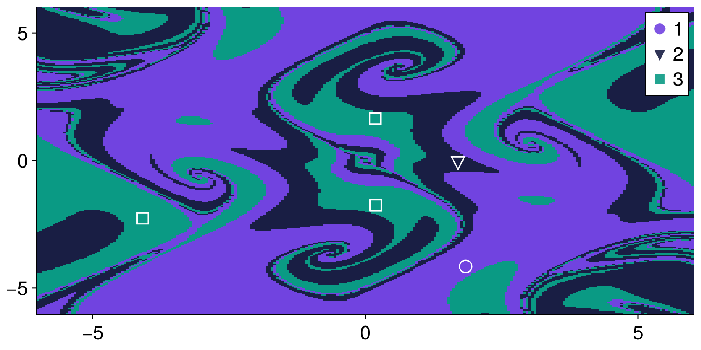
just like in the example above, there is a fourth attractor with 0 basin fraction. This is an unstable fixed point, and exists exactly because we provided a grid with the unstable fixed point exactly on this grid
Irregular grid for BasinMapRecurrences
It is possible to provide an irregularly spaced grid to BasinMapRecurrences. This can make algorithm performance better for continuous time systems where the state space flow has significantly different speed in some state space regions versus others.
In the following example the dynamical system has only one attractor: a limit cycle. However, near the origin (0, 0) the timescale of the dynamics becomes very slow. As the trajectory is stuck there for quite a while, the recurrences algorithm may identify this region as an "attractor" (incorrectly). The solutions vary and can be to increase drastically the max time checks for finding attractors, or making the grid much more fine. Alternatively, one can provide a grid that is only more fine near the origin and not fine elsewhere.
The example below highlights that for rather coarse settings of grid and convergence thresholds, using a grid that is finer near (0, 0) gives correct results:
using Attractors, CairoMakie
function predator_prey_fastslow(u, p, t)
α, γ, ϵ, ν, h, K, m = p
N, P = u
du1 = α*N*(1 - N/K) - γ*N*P / (N+h)
du2 = ϵ*(ν*γ*N*P/(N+h) - m*P)
return SVector(du1, du2)
end
γ = 2.5
h = 1
ν = 0.5
m = 0.4
ϵ = 1.0
α = 0.8
K = 15
u0 = rand(2)
p0 = [α, γ, ϵ, ν, h, K, m]
ds = CoupledODEs(predator_prey_fastslow, u0, p0)
fig = Figure()
ax = Axis(fig[1,1])
# when pow > 1, the grid is finer close to zero
for pow in (1, 2)
xg = yg = range(0, 18.0^(1/pow); length = 200).^pow
bmap = BasinMapRecurrences(ds, (xg, yg);
Dt = 0.1, sparse = true,
consecutive_recurrences = 10, attractor_locate_steps = 10,
maximum_iterations = 1000,
)
# Find attractor and its fraction (fraction is always 1 here)
sampler, _ = statespace_sampler(HRectangle(zeros(2), fill(18.0, 2)), 42)
fractions = basins_fractions(bmap, sampler; N = 100, show_progress = false)
attractors = extract_attractors(bmap)
scatter!(ax, vec(attractors[1]); markersize = 16/pow, label = "pow = $(pow)")
end
axislegend(ax)
fig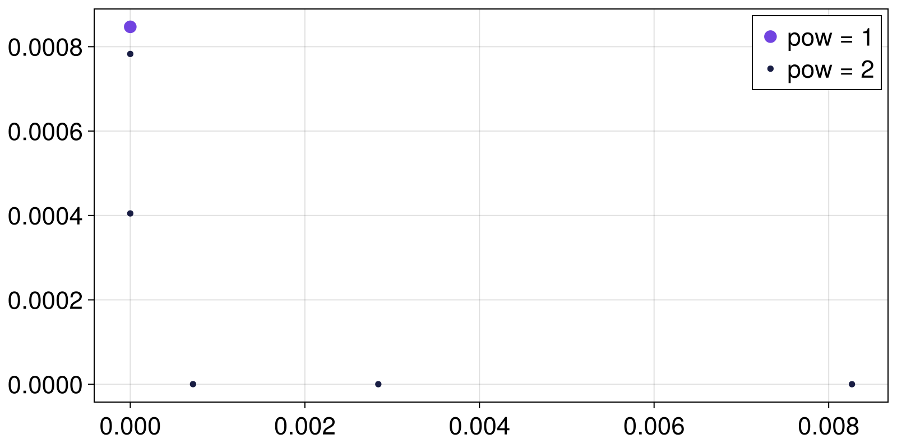
Subdivision Based Grid for BasinMapRecurrences
To achieve even better results for this kind of problematic systems than with previuosly introduced Irregular Grids we provide a functionality to construct Subdivision Based Grids in which one can obtain more coarse or dense structure not only along some axis but for a specific regions where the state space flow has significantly different speed. subdivision_based_grid enables automatic evaluation of velocity vectors for regions of originally user specified grid to further treat those areas as having more dense or coarse structure than others.
using Attractors, CairoMakie
function predator_prey_fastslow(u, p, t)
α, γ, ϵ, ν, h, K, m = p
N, P = u
du1 = α*N*(1 - N/K) - γ*N*P / (N+h)
du2 = ϵ*(ν*γ*N*P/(N+h) - m*P)
return SVector(du1, du2)
end
γ = 2.5
h = 1
ν = 0.5
m = 0.4
ϵ = 1.0
α = 0.8
K = 15
u0 = rand(2)
p0 = [α, γ, ϵ, ν, h, K, m]
ds = CoupledODEs(predator_prey_fastslow, u0, p0)
xg = yg = range(0, 18, length = 30)
# Construct `Subdivision Based Grid`
grid = subdivision_based_grid(ds, (xg, yg))
grid.lvl_array30×30 Matrix{Int64}:
4 4 4 4 4 4 4 4 4 4 4 4 4 … 3 3 3 3 3 3 3 3 3 3 3 3
4 4 4 4 4 4 4 4 3 3 3 3 3 2 2 2 2 2 2 2 2 2 2 1 1
4 4 4 4 4 4 3 3 3 3 2 2 2 2 1 1 1 1 1 1 1 1 1 1 1
4 4 4 4 4 3 3 3 3 2 2 2 2 1 1 1 1 1 1 1 1 1 1 1 1
4 4 4 4 4 3 3 3 3 2 2 2 2 1 1 1 1 1 1 1 1 1 1 1 0
4 4 4 4 4 3 3 3 2 2 2 2 2 … 1 1 1 1 1 1 1 1 1 1 0 0
4 4 4 4 4 3 3 3 2 2 2 2 2 1 1 1 1 1 1 1 1 1 0 0 0
4 4 4 4 4 3 3 3 2 2 2 2 2 1 1 1 1 1 1 1 1 0 0 0 0
4 4 4 4 4 3 3 3 2 2 2 2 2 1 1 1 1 1 1 1 1 0 0 0 0
4 4 4 4 4 3 3 3 2 2 2 2 2 1 1 1 1 1 1 1 0 0 0 0 0
⋮ ⋮ ⋮ ⋱ ⋮ ⋮
4 4 4 4 3 3 3 2 2 2 2 2 1 1 1 1 1 0 0 0 0 0 0 0 0
4 4 4 4 3 3 2 2 2 2 2 1 1 1 1 1 1 0 0 0 0 0 0 0 0
4 4 4 3 3 3 2 2 2 2 2 1 1 1 1 1 0 0 0 0 0 0 0 0 0
4 4 4 3 3 3 2 2 2 2 2 1 1 1 1 1 0 0 0 0 0 0 0 0 0
4 4 4 3 3 2 2 2 2 2 1 1 1 … 1 1 1 0 0 0 0 0 0 0 0 0
4 4 3 3 3 2 2 2 2 2 1 1 1 1 1 0 0 0 0 0 0 0 0 0 0
4 4 3 3 3 2 2 2 2 2 1 1 1 1 1 0 0 0 0 0 0 0 0 0 0
4 4 3 3 2 2 2 2 2 1 1 1 1 1 0 0 0 0 0 0 0 0 0 0 0
4 3 3 3 2 2 2 2 2 1 1 1 1 1 0 0 0 0 0 0 0 0 0 0 0The constructed array corresponds to levels of discretization for specific regions of the grid as a powers of 2, meaning that if area index is assigned to be 3, for example, the algorithm will treat the region as one being 2^3 = 8 times more dense than originally user provided grid (xg, yg).
Now upon the construction of this structure, one can simply pass it into bmap function as usual.
fig = Figure()
ax = Axis(fig[1,1])
# passing SubdivisionBasedGrid into bmap
bmap = BasinMapRecurrences(ds, grid;
Dt = 0.1, sparse = true,
consecutive_recurrences = 10, attractor_locate_steps = 10,
maximum_iterations = 1000,
)
# Find attractor and its fraction (fraction is always 1 here)
sampler, _ = statespace_sampler(HRectangle(zeros(2), fill(18.0, 2)), 42)
fractions = basins_fractions(bmap, sampler; N = 100, show_progress = false)
attractors_SBD = extract_attractors(bmap)
scatter!(ax, vec(attractors_SBD[1]); label = "SubdivisionBasedGrid")
# to compare the results we also construct RegularGrid of same length here
xg = yg = range(0, 18, length = 30)
bmap = BasinMapRecurrences(ds, (xg, yg);
Dt = 0.1, sparse = true,
consecutive_recurrences = 10, attractor_locate_steps = 10,
maximum_iterations = 1000,
)
sampler, _ = statespace_sampler(HRectangle(zeros(2), fill(18.0, 2)), 42)
fractions = basins_fractions(bmap, sampler; N = 100, show_progress = false)
attractors_reg = extract_attractors(bmap)
scatter!(ax, vec(attractors_reg[1]); label = "RegularGrid")
axislegend(ax)
fig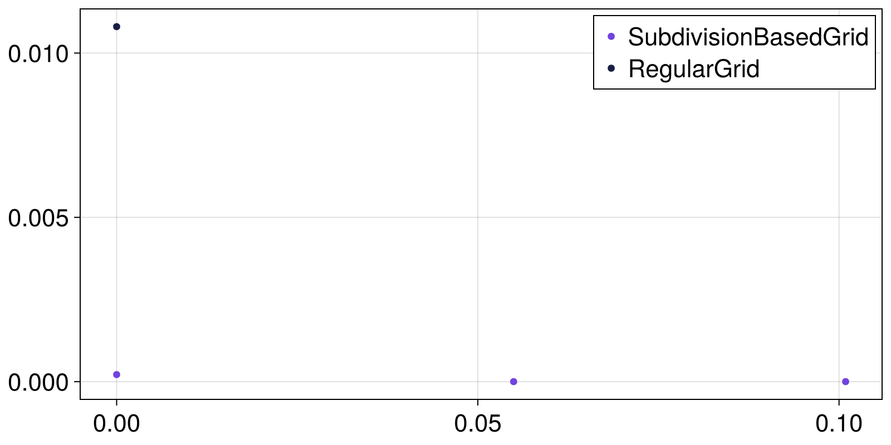
Basin fractions continuation in the magnetic pendulum
Perhaps the simplest application of global_continuation is to produce a plot of how the fractions of attractors change as we continuously change the parameter we changed above to calculate tipping probabilities.
Computing the fractions
This is what the following code does:
# initialize projected magnetic pendulum
using Attractors, PredefinedDynamicalSystems
using Random: Xoshiro
ds = Systems.magnetic_pendulum(; d = 0.3, α = 0.2, ω = 0.5)
xg = yg = range(-3, 3; length = 101)
ds = ProjectedDynamicalSystem(ds, 1:2, [0.0, 0.0])
# Choose a bmap via recurrences
bmap = BasinMapRecurrences(ds, (xg, yg); Δt = 1.0)
# What parameter to change, over what range
γγ = range(1, 0; length = 101)
prange = [[1, 1, γ] for γ in γγ]
pidx = :γs
# important to make a sampler that respects the symmetry of the system
region = HSphere(3.0, 2)
sampler, = statespace_sampler(region, 1234)
# continue attractors and basins:
# `Inf` threshold fits here, as attractors move smoothly in parameter space
rsc = RecurrencesFindAndMatch(bmap; threshold = Inf)
fractions_cont, attractors_cont = global_continuation(
rsc, prange, pidx, sampler;
show_progress = false, samples_per_parameter = 100
)
# Show some characteristic fractions:
fractions_cont[[1, 50, 101]]3-element Vector{Dict}:
Dict(2 => 0.32, 3 => 0.3, 1 => 0.38)
Dict(2 => 0.47572815533980584, 3 => 0.4174757281553398, 1 => 0.10679611650485436)
Dict(2 => 0.39215686274509803, 3 => 0.6078431372549019)Plotting the fractions
We visualize them using a predefined function that you can find in docs/basins_plotting.jl
# careful; `prange` isn't a vector of reals!
plot_basins_curves(fractions_cont, γγ)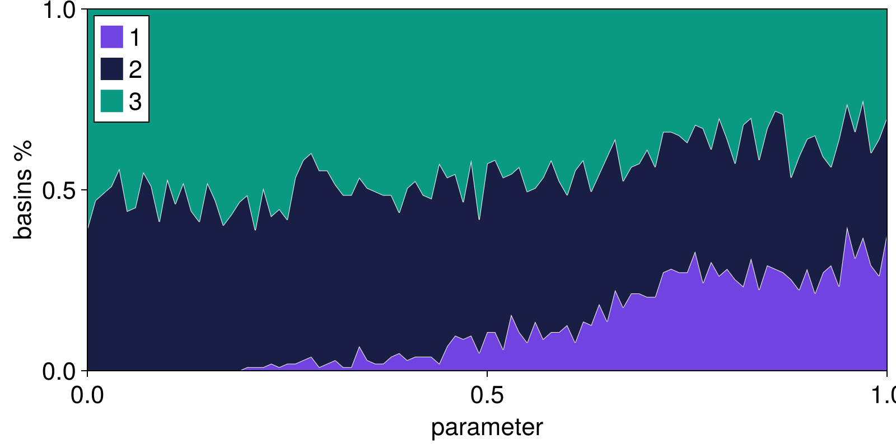
Fixed point curves
A by-product of the analysis is that we can obtain the curves of the position of fixed points for free. However, only the stable branches can be obtained!
using CairoMakie
fig = Figure()
ax = Axis(fig[1,1]; xlabel = L"\gamma_3", ylabel = "fixed point")
# choose how to go from attractor to real number representation
function real_number_repr(attractor)
p = attractor[1]
return (p[1] + p[2])/2
end
for (i, γ) in enumerate(γγ)
for (k, attractor) in attractors_cont[i]
scatter!(ax, γ, real_number_repr(attractor); color = Cycled(k))
end
end
fig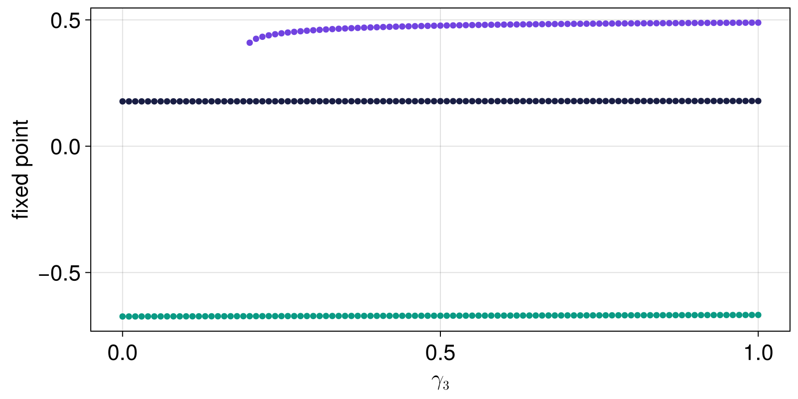
as you can see, two of the three fixed points, and their stability, do not depend at all on the parameter value, since this parameter value tunes the magnetic strength of only the third magnet. Nevertheless, the fractions of basin of attraction of all attractors depend strongly on the parameter. This is a simple example that highlights excellently how this new approach we propose here should be used even if one has already done a standard linearized bifurcation analysis.
Featurizing and grouping across parameters (MCBB / FGAP)
Here we showcase the example of the Monte Carlo Basin Bifurcation publication. For this, we will use FeaturizeGroupAcrossParameter while also providing a par_weight = 1 keyword. However, we will not use a network of 2nd order Kuramoto oscillators (as done in the paper by Gelbrecht et al.) because it is too costly to run on CI. Instead, we will use "dummy" system which we know analytically the attractors and how they behave versus a parameter.
using Attractors, Random
function dumb_map(dz, z, p, n)
x, y = z
r = p[1]
if r < 0.5
dz[1] = dz[2] = 0.0
else
if x > 0
dz[1] = r
dz[2] = r
else
dz[1] = -r
dz[2] = -r
end
end
return
end
r = 3.833
ds = DiscreteDynamicalSystem(dumb_map, [0., 0.], [r])2-dimensional DeterministicIteratedMap
deterministic: true
discrete time: true
in-place: true
dynamic rule: dumb_map
parameters: [3.833]
time: 0
state: [0.0, 0.0]
sampler, = statespace_sampler(HRectangle([-3.0, -3.0], [3.0, 3.0]), 1234)
rrange = range(0, 2; length = 21)
ridx = 1
featurizer(a, t) = a[end]
clusterspecs = GroupViaClustering(optimal_radius_method = "silhouettes", max_used_features = 200)
bmap = BasinMapFeaturizeGroup(ds, featurizer, clusterspecs; T = 20, threaded = true)
gap = FeaturizeGroupAcrossParameter(bmap; par_weight = 1.0)
fractions_cont, clusters_info = global_continuation(
gap, rrange, ridx, sampler; show_progress = false
)
fractions_cont21-element Vector{Dict{Int64, Float64}}:
Dict(1 => 1.0)
Dict(1 => 1.0)
Dict(1 => 1.0)
Dict(1 => 1.0)
Dict(1 => 1.0)
Dict(2 => 0.47, 3 => 0.53)
Dict(5 => 0.52, 4 => 0.48)
Dict(6 => 0.56, 7 => 0.44)
Dict(9 => 0.56, 8 => 0.44)
Dict(11 => 0.46, 10 => 0.54)
⋮
Dict(16 => 0.48, 17 => 0.52)
Dict(18 => 0.54, 19 => 0.46)
Dict(20 => 0.53, 21 => 0.47)
Dict(22 => 0.4, 23 => 0.6)
Dict(25 => 0.51, 24 => 0.49)
Dict(27 => 0.49, 26 => 0.51)
Dict(29 => 0.54, 28 => 0.46)
Dict(31 => 0.55, 30 => 0.45)
Dict(32 => 0.47, 33 => 0.53)Looking at the information of the "attractors" (here the clusters of the grouping procedure) does not make it clear which label corresponds to which kind of attractor, but we can look at the:
clusters_info21-element Vector{Dict{Int64, Vector{Float64}}}:
Dict(1 => [0.0, 0.0])
Dict(1 => [0.0, 0.0])
Dict(1 => [0.0, 0.0])
Dict(1 => [0.0, 0.0])
Dict(1 => [0.0, 0.0])
Dict(2 => [0.5, 0.5], 3 => [-0.5, -0.5])
Dict(5 => [-0.6000000000000006, -0.6000000000000006], 4 => [0.6000000000000005, 0.6000000000000005])
Dict(6 => [-0.7000000000000002, -0.7000000000000002], 7 => [0.6999999999999995, 0.6999999999999995])
Dict(9 => [0.7999999999999995, 0.7999999999999995], 8 => [-0.8, -0.8])
Dict(11 => [0.8999999999999992, 0.8999999999999992], 10 => [-0.8999999999999991, -0.8999999999999991])
⋮
Dict(16 => [-1.200000000000001, -1.200000000000001], 17 => [1.2000000000000013, 1.2000000000000013])
Dict(18 => [-1.2999999999999987, -1.2999999999999987], 19 => [1.299999999999999, 1.299999999999999])
Dict(20 => [-1.4000000000000001, -1.4000000000000001], 21 => [1.3999999999999992, 1.3999999999999992])
Dict(22 => [1.5, 1.5], 23 => [-1.5, -1.5])
Dict(25 => [1.5999999999999994, 1.5999999999999994], 24 => [-1.5999999999999996, -1.5999999999999996])
Dict(27 => [-1.7000000000000013, -1.7000000000000013], 26 => [1.7000000000000015, 1.7000000000000015])
Dict(29 => [1.7999999999999983, 1.7999999999999983], 28 => [-1.7999999999999985, -1.7999999999999985])
Dict(31 => [1.9000000000000015, 1.9000000000000015], 30 => [-1.9000000000000006, -1.9000000000000006])
Dict(32 => [-2.0, -2.0], 33 => [2.0, 2.0])Using histograms and histogram distances as features
One of the aspects discussed in the original MCBB paper and implementation was the usage of histograms of the means of the variables of a dynamical system as the feature vector. This is useful in very high dimensional systems, such as oscillator networks, where the histogram of the means is significantly different in synchronized or unsychronized states.
This is possible to do with current interface without any modifications, by using two more packages: ComplexityMeasures.jl to compute histograms, and Distances.jl for the Kullback-Leibler divergence (or any other measure of distance in the space of probability distributions you fancy).
The only code we need to write to achieve this feature is a custom featurizer and providing an alternative distance to GroupViaClustering. The code would look like this:
using Distances: KLDivergence
using ComplexityMeasures: ValueHistogram, FixedRectangularBinning, probabilities
# you decide the binning for the histogram, but for a valid estimation of
# distances, all histograms must have exactly the same bins, and hence be
# computed with fixed ranges, i.e., using the `FixedRectangularBinning`
function histogram_featurizer(A, t)
binning = FixedRectangularBinning(range(-5, 5; length = 11))
ms = mean.(columns(A)) # vector of mean of each variable
p = probabilities(ValueHistogram(binning), ms) # this is the histogram
return vec(p) # because Distances.jl doesn't know `Probabilities`
end
gconfig = GroupViaClustering(;
clust_distance_metric = KLDivergence(), # or any other PDF distance
)You can then pass the histogram_featurizer and gconfig to an BasinMapFeaturizeGroup and use the rest of the library as usual.
Edge tracking
To showcase how to run the edgetracking algorithm, let us use it to find the saddle point of the bistable FitzHugh-Nagumo (FHN) model, a two-dimensional ODE system originally conceived to represent a spiking neuron. We define the system in the following form:
using OrdinaryDiffEqVerner: Vern9
function fitzhugh_nagumo(u,p,t)
x, y = u
eps, beta = p
dx = (x - x^3 - y)/eps
dy = -beta*y + x
return SVector{2}([dx, dy])
end
params = [0.1, 3.0]
ds = CoupledODEs(fitzhugh_nagumo, ones(2), params, diffeq=(;alg = Vern9(), reltol=1e-11))2-dimensional CoupledODEs
deterministic: true
discrete time: false
in-place: false
dynamic rule: fitzhugh_nagumo
ODE solver: Vern9
ODE kwargs: (reltol = 1.0e-11,)
parameters: [0.1, 3.0]
time: 0.0
state: [1.0, 1.0]
Now we compute the fixed points and basins of attraction of the FHN model.
xg = yg = range(-1.5, 1.5; length = 201)
grid = (xg, yg)
bmap = BasinMapRecurrences(ds, grid; sparse=false)
basins, attractors = basins_of_attraction(bmap)
attractorsDict{Int64, StateSpaceSet{2, Float64, SVector{2, Float64}}} with 3 entries:
2 => 2-dimensional StateSpaceSet{Float64} with 1 points
3 => 2-dimensional StateSpaceSet{Float64} with 1 points
1 => 2-dimensional StateSpaceSet{Float64} with 1 pointsThe basins_of_attraction function found three fixed points: the two stable nodes of the system (labelled A and B) and the saddle point at the origin. The saddle is an unstable equilibrium and typically will not be found by basins_of_attraction. Coincidentally here we initialized an initial condition exactly on the saddle, and hence it was found. We can always find saddles with the edgetracking function. For illustration, let us initialize the algorithm from two initial conditions init1 and init2 (which must belong to different basins of attraction, see figure below).
attractors_AB = Dict(1 => attractors[1], 2 => attractors[2])
init1, init2 = [-1.0, -1.0], [-1.0, 0.2]([-1.0, -1.0], [-1.0, 0.2])Now, we run the edge tracking algorithm:
et = edgetracking(ds, attractors_AB; u1=init1, u2=init2,
bisect_thresh = 1e-3, diverge_thresh = 2e-3, Δt = 1e-5, abstol = 1e-3
)
et.edge[end]2-element SVector{2, Float64} with indices SOneTo(2):
0.0012222453694255174
-0.0008308993082805703The algorithm has converged to the origin (up to the specified accuracy) where the saddle is located. The figure below shows how the algorithm has iteratively tracked along the basin boundary from the two initial conditions (red points) to the saddle (green square). Points of the edge track (orange) at which a re-bisection occured are marked with a white border. The figure also depicts two trajectories (blue) intialized on either side of the basin boundary at the first bisection point. We see that these trajectories follow the basin boundary for a while but then relax to either attractor before reaching the saddle. By counteracting the instability of the saddle, the edge tracking algorithm instead allows to track the basin boundary all the way to the saddle, or edge state.
traj1 = trajectory(ds, 2, et.track1[et.bisect_idx[1]], Δt=1e-5)
traj2 = trajectory(ds, 2, et.track2[et.bisect_idx[1]], Δt=1e-5)
fig = Figure()
ax = Axis(fig[1,1], xlabel="x", ylabel="y")
heatmap_basins_attractors!(ax, grid, basins, attractors, add_legend=false, labels=Dict(1=>"Attractor A", 2=>"Attractor B", 3=>"Saddle"))
lines!(ax, traj1[1][:,1], traj1[1][:,2], color=:dodgerblue, linewidth=2, label="Trajectories")
lines!(ax, traj2[1][:,1], traj2[1][:,2], color=:dodgerblue, linewidth=2)
lines!(ax, et.edge[:,1], et.edge[:,2], color=:orange, linestyle=:dash)
scatter!(ax, et.edge[et.bisect_idx,1], et.edge[et.bisect_idx,2], color=:white, markersize=15, marker=:circle)
scatter!(ax, et.edge[:,1], et.edge[:,2], color=:orange, markersize=11, marker=:circle, label="Edge track")
scatter!(ax, [-1.0,-1.0], [-1.0, 0.2], color=:red, markersize=15, label="Initial conditions")
xlims!(ax, -1.2, 1.1); ylims!(ax, -1.3, 0.8)
axislegend(ax, position=:rb)
fig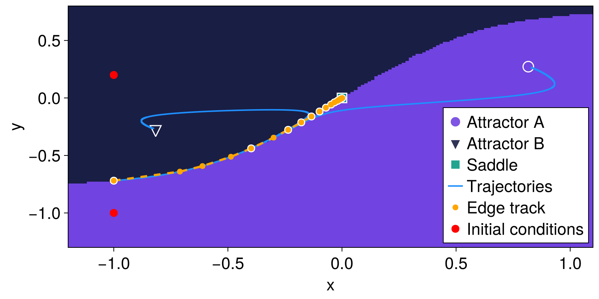
In this simple two-dimensional model, we could of course have found the saddle directly by computing the zeroes of the ODE system. However, the edge tracking algorithm allows finding edge states also in high-dimensional and chaotic systems where a simple computation of unstable equilibria becomes infeasible.
Estimating (almost) all stability quantifiers using the accumulator
The type StabilityQuantifiersAccumulator which was highlighted in the main tutorial is showcased in an application of finding all stability quantifiers for the Duffing oscillator at a fixed parameter here.
function duffing(u, p, t)
x, y = u
α, β = p
dx = y
dy = x - x^3 - α*y + β
return SVector(dx, dy)
end
import LinearAlgebra: I
import Distributions: MvNormal
params = [0.2, 0.0]
ds = CoupledODEs(duffing, ones(2), params, diffeq=(; reltol=1e-11))
n_grid = 201
grid = (range(-2, 2; length = n_grid),range(-2, 2; length = n_grid),)
bmap = BasinMapRecurrences(ds, grid; sparse = false, consecutive_recurrences = 1000)
accumulator = StabilityQuantifiersAccumulator(bmap;
finite_time = 50.0, weighting_distribution = MvNormal(zeros(2), 1.0*I)
)StabilityQuantifiersAccumulator
system: CoupledODEs
If we call this object on some initial conditions and finalize its values, we receive several different stability quantifiers. Their interpretation can be found in the documentation of StabilityQuantifiersAccumulator.
ics = ics_from_grid(grid)
for u0 in ics
id = accumulator(u0)
end
stability_quantifiers = finalize_accumulator(accumulator)Dict{String, Any} with 17 entries:
"characteristic_return_time" => Dict(2=>10.0, 3=>Inf, 1=>10.0)
"maximal_noncritical_shock_magnitude" => Dict(2=>3.60555, 3=>2.20045, 1=>3.60…
"maximal_amplification_time" => Dict(2=>0.964966, 3=>Inf, 1=>0.96496…
"mean_convergence_time" => Dict(2=>12.2827, 3=>0.000954117, 1=>…
"finite_time_basin_stability" => Dict(2=>0.499746, 3=>0.00034244, 1=>…
"mean_noncritical_shock_magnitude" => Dict(2=>0.621747, 3=>0.000289542, 1=…
"median_convergence_pace" => Dict(2=>23.0673, 3=>3.25138, 1=>23.0…
"reactivity" => Dict(2=>0.409906, 3=>Inf, 1=>0.40989…
"median_convergence_time" => Dict(2=>24.9838, 3=>2.43745, 1=>24.9…
"basin_stability" => Dict(2=>0.499746, 3=>0.00034244, 1=>…
"maximal_convergence_pace" => Dict(2=>36498.5, 3=>26.9303, 1=>3859…
"maximal_convergence_time" => Dict(2=>32.9056, 3=>7.46469, 1=>32.9…
"mean_convergence_pace" => Dict(2=>15.8992, 3=>0.00250916, 1=>1…
"maximal_amplification" => Dict(2=>1.28413, 3=>Inf, 1=>1.28412)
"basin_fraction" => Dict(2=>0.49979, 3=>0.000297022, 1=>…
"intermingledness1" => Dict(2=>1.01873, 3=>0.612804, 1=>0.9…
"minimal_critical_shock_magnitude" => Dict(2=>0.519999, 3=>0.02, 1=>0.5200…Enhancing the accumulator with arbitrary user-defined quantifiers
Following from the example above, lets' say that we want to enhance the accumulator with another quantity which is not estimated by default. In this example this will simply be the maximum velocity (2nd variable) each basin has. Following the documentation of StabilityQuantifiersAccumulator, we only need to define a function that inputs a SampledBasinsOfAttraction and returns a dictionary mapping attractor IDs to their additional quantifier. We can do this like so:
function extra_function(sboa::SampledBasinsOfAttraction, ds::DynamicalSystem)
ids = extract_basins(sboa)
u0s = extract_domain(sboa)
att = extract_attractors(sboa) # we don't need the attractors for this example
out = Dict(k => 0.0 for k in unique(ids)) # our function must return a Dict
for i in eachindex(ids)
id = ids[i]
out[id] = max(out[id], u0s[i][2])
end
return out
end
# `extras` must be dictionary mapping the quantifier name to its function.
extras = Dict("maxv" => extra_function)Dict{String, typeof(Main.extra_function)} with 1 entry:
"maxv" => extra_functionwe now pass this to a new accumulator and re-run everything:
accumulator = StabilityQuantifiersAccumulator(bmap, extras;
finite_time = 50.0, weighting_distribution = MvNormal(zeros(2), 1.0*I)
)
for u0 in ics
id = accumulator(u0)
end
stability_quantifiers = finalize_accumulator(accumulator)
stability_quantifiers["maxv"]Dict{Int64, Float64} with 3 entries:
2 => 2.0
3 => 1.98
1 => 2.0Unsurprisingly, the maximum value of the y coordinate is ≈2 for all basins, but this we new already due to the symmetries of the system's basins!
Notice that this new extra quantity would also be tracked along a continuation if the accumulator is given to a continuation like in the main tutorial's example.
Invariant saddle of a dynamical system
The stagger-and-step method approximates the invariant non-attracting set governing the chaotic transient dynamics of a system, namely the stable manifold of a chaotic saddle.
Given the dynamical system ds and a initial guess x0 in a region with no attractors, the algorithm provides N points close to the stable manifold that escape from the region after at least Tm steps of ds.
We first set the dynamical system, in our case we set up two coupled Hénon map that are known to have a chaotic saddle that generates chaotic transients before the trajectories escape:
function F!(du, u ,p, n)
x,y,u,v = u
A = 3; B = 0.3; C = 5.; D = 0.3; k = 0.4;
du[1] = A - x^2 + B*y + k*(x-u)
du[2] = x
du[3] = C - u^2 + D*v + k*(u-x)
du[4] = u
return
end
ds = DeterministicIteratedMap(F!, zeros(4))4-dimensional DeterministicIteratedMap
deterministic: true
discrete time: true
in-place: true
dynamic rule: F!
parameters: nothing
time: 0
state: [0.0, 0.0, 0.0, 0.0]
Next we define a region in the phase space that should not contain attractors. Using this region we also define a sampler and a membership function isinside:
R_min = [-4; -4.; -4.; -4.]
R_max = [4.; 4.; 4.; 4.]
sampler, isinside = statespace_sampler(HRectangle(R_min,R_max))(StateSpaceSets.RectangleGenerator{Float64, Vector{Float64}, Random.Xoshiro}([-4.0, -4.0, -4.0, -4.0], [8.0, 8.0, 8.0, 8.0], [[0.0, 0.0, 0.0, 0.0]], Random.Xoshiro(0x977006559c847989, 0x8f24556e4feea0c1, 0x0e8a3003a94c2298, 0xa9fcdb2ddc2a6700, 0x3379f4f3dff5d9c4)), StateSpaceSets.var"#isinside#65"{Vector{Float64}, Vector{Float64}}([4.0, 4.0, 4.0, 4.0], [-4.0, -4.0, -4.0, -4.0]))And we are ready! We can now call the function stagger_and_step with an initial condition x0:
x0 = sampler()
v = stagger_and_step(ds, x0, 10000, isinside; stagger_mode = :adaptive, δ = 1e-4, Tm = 10, max_steps = Int(1e5), δ₀ = 2.)4-dimensional StateSpaceSet{Float64} with 10000 points
2.38309 -0.616593 -0.422617 -2.11716
-1.74183 2.38309 3.06394 -0.422632
-1.24102 -1.74174 -2.59264 3.06401
1.47808 -1.24097 -1.34268 -2.59253
1.57107 1.47818 1.29073 -1.34283
1.08828 1.57074 2.81943 1.29063
1.59447 1.08826 -1.86918 2.81936
2.16956 1.59449 0.966335 -1.86922
-0.746932 2.16937 3.0233 0.966936
1.58486 -0.746896 -2.34198 3.02327
⋮
1.47325 1.87749 -0.923692 -1.91374
2.35143 1.47328 2.61381 -0.923721
-2.19446 2.35202 -2.00318 2.61359
-1.18655 -2.19446 1.84784 -2.00319
-0.278933 -1.18641 2.20355 1.84615
1.57328 -0.278933 1.69121 2.20355
0.39394 1.57328 2.84805 1.69121
2.33513 0.394096 -1.62215 2.84799
-0.750271 2.33481 1.64 -1.62217The stagger_mode keyword select the type of search in the phase space to stick close to the saddle at each step. The mode :adaptive adapts the radius of the stochastic search as a function of the success of the search process.
Finally we can represent a projection of the chaotic saddle found in this example:
fig = Figure()
ax = Axis(fig[1,1], xlabel="x", ylabel="y")
scatter!(ax, v[:,1], v[:,3]; markersize = 3)
fig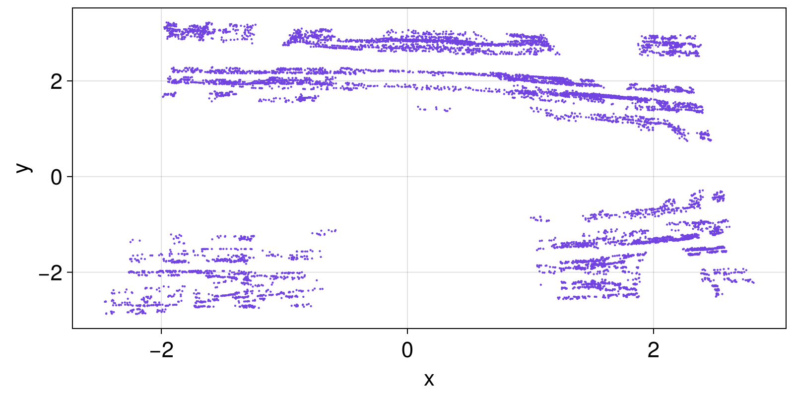
Matching limit cycles and fixed points in a system with named heterogeneous state space
This example discusses the situation of a dynamical system that during a global continuation it transitions from a fixed point A to a limit cycle B and then to another fixed point C that is far away (in statespace) from A but very close to B. In the context of this scenario, we do NOT want to match the fixed points with the limit cycle during the continuation. Furthermore, this particular dynamical system has a heterogeneous state space: the different dynamic variables have wildly different units, and there is no sensible transformation that would bring all variables to the same units. Lastly, this example is based on a dynamical system that was generated with ModelingToolkit.jl, and hence its dynamic variables and parameters are all named.
The system we will utilize in this example is a five-dimensional model for cloud transitions developed in (Datseris, 2026). Its variables are named s_b, q_b, z_b, C, SST. We will showcase how one can match attractors in this system simply by defining a special distance function that is given to MatchBySSSetDistance. This is:
function centroid_and_length(A, B)
if length(A) != length(B) && any(isequal(1), length.((A, B)))
return Inf
end
weights = Dict(:s_b => 300.0, :C => 1.0, :z_b => 1000.0, :SST => 300.0, :q_b => 10.0)
d = maximum(i -> abs((mean(A[:, i]) - mean(B[:, i]))/weights[i]), keys(weights))
return d
end
matcher = MatchBySSSetDistance(; distance = centroid_and_length, threshold = 0.2)We then provide this matcher to AttractorSeedContinueMatch and perform a global continuation as illustrated in the main Tutorial. This special matcher achieves the following:
- Does not match limit cycles with fixed points no matter what.
- Matches attractors according to their weighted centroid difference. Each dimension of the dynamical system has a typical scale that is characteristic for each dimension. Then the distance between centroids is normalized by this typical size.
- The maximum of these normalized distances is obtained.
- The
threshold = 0.2in essence means that if two attractors have a weighted centroid difference of less than 20% of the typical size for each dimension, the attractors are matched!
Aggregated stability quantifiers of a population model
This example discusses aggregation of continuation results: where a dynamical system may have multiple attractors, but some of them share the same functional/operating state for the context of the system. In such cases, you want to aggregate attractors with similar function. The recommended recipe to do this is: run a normal global_continuation to find attractors, merge the attractors into user defined groups with aggregate_continuation, and feed the merged attractors to stability_quantifiers_along_continuation for the computation of stability quantifiers.
We use the two-habitat population model with Allee effect, also featured in Schoenmakers and Feudel (Schoenmakers and Feudel, 2021). The state X = (X₁, X₂) are the (normalised) population densities of two coupled habitats, and we vary the carrying capacity K₁ of habitat 1 (its quality declines as K₁ decreases). For low enough K₁ the only surviving state is total extinction X = (0, 0).
using Attractors
using OrdinaryDiffEqVerner: Vern9
using CairoMakie
function population_rule(X, p, t)
X1, X2 = X
K1, r1, a1, r2, a2, K2, d = p
dX1 = r1 * X1 * (1 - X1/K1) * (X1 - a1) + d * (X2 - X1)
dX2 = r2 * X2 * (1 - X2/K2) * (X2 - a2) + d * (X1 - X2)
return SVector(dX1, dX2)
end
p0 = [0.9, 0.8, 0.3, 0.8, 0.8, 0.42, 0.1] # K₁, r₁, a₁, r₂, a₂, K₂, d
ds = CoupledODEs(population_rule, [0.7, 0.7], p0;
diffeq = (alg = Vern9(), abstol = 1e-9, reltol = 1e-9))
xg = yg = range(-0.001, 1.0; length = 101)
grid = (xg, yg)
bmap = BasinMapRecurrences(ds, grid;
Δt = 0.1, consecutive_recurrences = 1000, consecutive_lost_steps = 1000)
# A short continuation in K₁ with few samples, to keep the example fast
prange = range(0.91, 0.89; length = 5)
pcurve = [Dict(1 => v) for v in prange]
sampler, = statespace_sampler(grid, 1234)
alg = RecurrencesFindAndMatch(bmap; distance = StrictlyMinimumDistance())
fractions_cont, attractors_cont = global_continuation(
alg, pcurve, sampler; samples_per_parameter = 100, show_progress = false
)
length.(values.(attractors_cont)) # number of attractors at each step5-element Vector{Int64}:
2
2
3
3
2Now we aggregate. We do this, because we do not care which particular non-extinction state the system settles into — only whether the species survives at all. So we featurize each attractor by whether it is the extinction state using the following featurizer:
using Statistics: mean
function biomass_featurizer(A)
extinct = all(<(0.02), mean(A))
return SVector(Float64(extinct))
endbiomass_featurizer (generic function with 1 method)We can group the attractors that share similar features with pretty much any GroupingConfing, here we use
agg_config = GroupViaPairwiseComparison(; threshold = 0.5, rescale_features = false)GroupViaPairwiseComparison{Float64, Euclidean}(0.5, Euclidean(0.0), false)and proceed with the aggregation
agg_attractors_cont, centroids_cont, members_cont = aggregate_continuation(
attractors_cont, biomass_featurizer, agg_config
)
members_cont5-element Vector{Dict{Int64, Vector{Int64}}}:
Dict(2 => [1], 1 => [2])
Dict(2 => [1], 1 => [2])
Dict(2 => [3, 1], 1 => [2])
Dict(2 => [3, 1], 1 => [2])
Dict(2 => [1], 1 => [2])We then pass the merged attractors to stability_quantifiers_along_continuation. Each group is treated as a single attractor, so its basin fraction is the total fraction of state space leading to it.
quantifiers_cont = stability_quantifiers_along_continuation(
ds, agg_attractors_cont, pcurve, sampler;
ε = 0.05, finite_time = 100.0, show_progress = false
)
# The extinction group is the one whose feature centroid is 1
extinct_id = only(id for (id, c) in centroids_cont[end] if c[1] > 0.5)
alive_id = only(id for (id, c) in centroids_cont[end] if c[1] < 0.5)
fig = plot_basins_curves(quantifiers_cont["basin_fraction"], prange;
colors = Dict(extinct_id => "black", alive_id => "green"),
labels = Dict(extinct_id => "extinct", alive_id => "functioning"),
)
# `quantifiers_cont` holds every other stability quantifier too
ax = Axis(fig[0,1]; ylabel = "mct")
plot_continuation_curves!(ax, quantifiers_cont["mean_convergence_time"], prange;
colors = Dict(extinct_id => "black", alive_id => "green"),
labels = Dict(extinct_id => "extinct", alive_id => "functioning"),
)
# and for clarity we plot the number of aggregated attractors
ax = Axis(fig[-1,1]; ylabel = "# aggregates")
lengths_cont = [Dict(k => length(vals) for (k, vals) in d) for d in members_cont]
plot_continuation_curves!(ax, lengths_cont, prange;
colors = Dict(extinct_id => "black", alive_id => "green"),
labels = Dict(extinct_id => "extinct", alive_id => "functioning"),
)
fig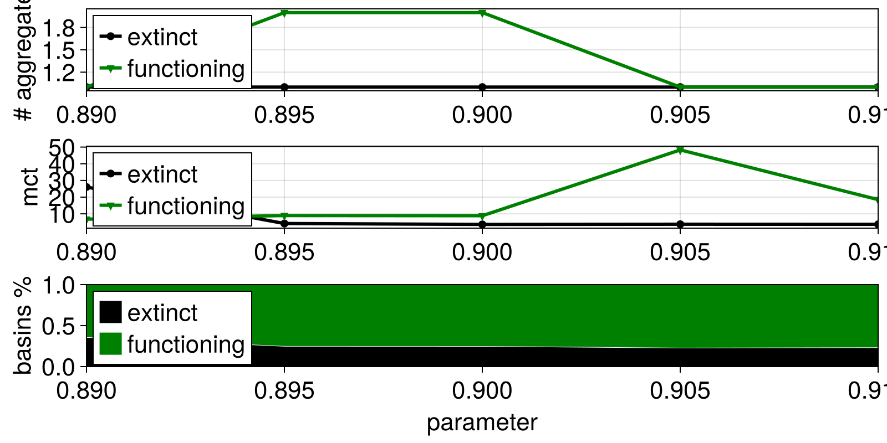
Performing multiple global continuations to incorporate prescribed parameter changes and parameter uncertainty
In this example we continue with the same model used in the previous example, the cloud model of (Datseris, 2026). In that model there are some key parameters that must be studied, all of which affect transitions between different cloud states. They are named as D, U, δ_Δ₊T, RH₊, δ_FTR. Crucially, each of these parameters have some uncertainty. In the context of the model this uncertainty reflects environmental variability. In addition, some of these parameters change with a prescribed trend in time, reflecting climate change.
We want to perform global continuation that incorporates both the prescribed trends, and uncertainty. We will do this by performing multiple continuations that start with randomly sampled parameters, and then continue along a curve in parameter space reflecting the chosen trends. We first make the following helper function that will be generating parameter curves (and remember, all parameters are named due to using ModelingToolkit.jl):
using Distributions: Uniform, Normal
function sample_pcurve(time = 0:14)
# inputs
uncertainty = Dict(
:D => Uniform(1e-6, 5e-6),
:U => Uniform(5.0, 9.0),
:δ_Δ₊T => Uniform(1, 10),
:RH₊ => Uniform(0.1, 0.4),
:δ_FTR => Uniform(0, 10),
:CO2 => Normal(400, 0), # no uncertainty
)
rates = Dict(:CO2 => 100, :D => -0.05e-6, :U => -0.1)
# generate the curve: starting parameters
starts = Dict(p => rand(dist) for (p, dist) in uncertainty)
# generate the curve: prescribed trends
pcurve = [Dict{Symbol, Float64}() for t in time]
for (p, t) in zip(pcurve, time)
for k in keys(uncertainty)
rate = get(rates, k, 0.0) # parameters with no rate are constant
p[k] = starts[k] + rate*t
end
end
return pcurve
endsample_pcurve (generic function with 2 methods)let's see a curve that this function generates:
pcurve = sample_pcurve(0:2)3-element Vector{Dict{Symbol, Float64}}:
Dict(:U => 6.1241965853981615, :δ_Δ₊T => 6.398445776836653, :D => 1.4029043664423125e-6, :δ_FTR => 8.513204588245577, :CO2 => 400.0, :RH₊ => 0.3535082989973791)
Dict(:U => 6.024196585398162, :δ_Δ₊T => 6.398445776836653, :D => 1.3529043664423125e-6, :δ_FTR => 8.513204588245577, :CO2 => 500.0, :RH₊ => 0.3535082989973791)
Dict(:U => 5.924196585398161, :δ_Δ₊T => 6.398445776836653, :D => 1.3029043664423124e-6, :δ_FTR => 8.513204588245577, :CO2 => 600.0, :RH₊ => 0.3535082989973791)With global continuation you can run through all of these generated pcurves and analyze accordingly!
Each continuation result will be matched across the time axis. But the individual continuations may not be matched with each other! That means that for example a "high cloud fraction attractor" will have a consistent ID through one continuation, but between different continuations it may not have the same ID! The easiest way to resolve this is to transform each continuation to a series using continuation_series. Then, use a dedicated classification function that analyses a particular series (i.e., a single and specific attractor continuation) and assigns to it a particular, context-related label, instead of the random integer it obtains by default.